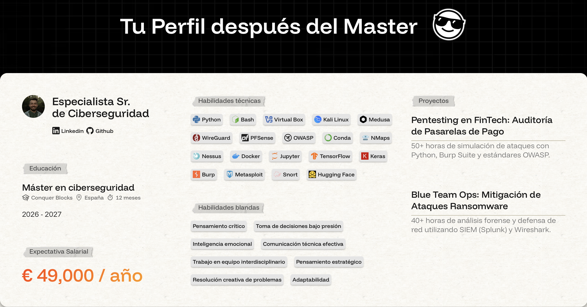

Máster en Ciberseguridad
Protégete y protege a los demás con una formación práctica y aplicada en el ámbito de la ciberseguridad. Aprende desde cero con nuestro enfoque 100% práctico, guiado por expertos del sector, y obtén un contrato de trabajo garantizado al finalizar el programa.
Aprende las tecnologías exactas que exigen las empresas hoy. Domina las herramientas más modernas para convertirte en un profesional completo y versátil.
+4,000 Alumnos Formados desde Cero necesitas saber de números ni programación previa. Aprende desde cero con nuestra metodología paso a paso, guiado de principio a fin por profesionales líderes en la industria.
